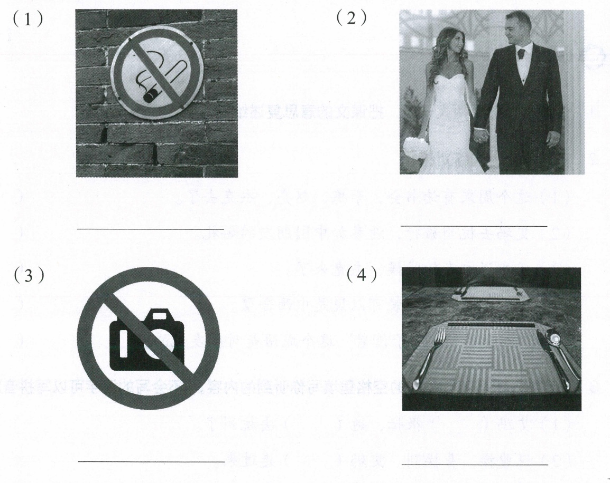

🔥 热身 — Khởi động
I. 词语卡 — Thẻ từ vựng
📝 Bài tập điền từ (18 câu)
Chọn từ đúng để hoàn thành câu giao tiếp hằng ngày.
II. 语法 — 书面语与口语 (Văn viết & khẩu ngữ)
Tiếng Hán phân biệt khá rõ giữa 书面语 (văn viết/ngôn ngữ trang trọng) và 口语 (khẩu ngữ/lời nói hằng ngày). Thành ngữ (成语) và tục ngữ (俗语) đều có thể dùng ở cả hai phong cách, nhưng thành ngữ chủ yếu dùng trong văn viết.
Ví dụ gốc trong bài (phần tô đỏ là cách nói 书面语)
① Cú pháp (syntax)
书面语 thường dùng từ Hán Việt gốc văn ngôn (此、怎、讲…), cấu trúc cô đọng, đối xứng (như "说曹操，曹操到" 4+4 chữ, "执子之手，与子偕老" đối xứng 5+5); 口语 dùng từ thường ngày, câu dài hơn, có thể thêm trợ từ ngữ khí (呗、啊、吧…).② Ngữ nghĩa (semantics)
书面语 và 口语 tương ứng cùng biểu đạt một nội dung, nhưng 书面语 (đặc biệt thành ngữ/tục ngữ) thường mang thêm sắc thái văn hóa, hình ảnh ẩn dụ (như "曹操" gợi điển tích Tam Quốc, "执子之手" gợi thơ ca cổ) mà bản dịch 口语 không truyền tải hết được.③ Ngữ dụng (pragmatics)
书面语/thành ngữ dùng khi muốn nói trang trọng, súc tích, gây ấn tượng, hoặc trích dẫn văn hóa (viết báo, phát biểu, viết văn); 口语 dùng trong giao tiếp thân mật, đời thường. Trình độ: HSK4.语法活动 — Tìm cụm 书面语 trong câu (bấm chọn)
⚠️ Dự đoán 6 lỗi học sinh Việt hay gặp
- Dùng thành ngữ/tục ngữ 书面语 trong hoàn cảnh quá suồng sã: ví dụ chêm "说曹操，曹操到" hay "执子之手，与子偕老" vào tin nhắn đùa giỡn thân mật, nghe gượng gạo, lệch phong cách.
- Dùng 书面语 thay 口语 khi nói chuyện bạn bè: hỏi bạn thân "此话怎讲？" thay vì "这话是什么意思？" khiến câu nói nghe xa cách, kiểu cách không cần thiết.
- Dịch máy móc cấu trúc tiếng Việt thành thành ngữ Hán: ví dụ muốn nói "nhắc ai người đó đến" nhưng lại chêm sai tên riêng vào khuôn "说X，X到" (khuôn này chỉ cố định với "曹操", không tự thay tên khác được vì đây là 俗语 nguyên khối).
- Không nhận ra "呗" là trợ từ khẩu ngữ: dùng "呗" trong văn viết trang trọng (báo cáo, bài luận) — vốn 呗 chỉ hợp khẩu ngữ thân mật.
- Cho rằng mọi thành ngữ chỉ dùng trong văn viết: trong khi một số thành ngữ (như 中西合璧) vẫn dùng tự nhiên trong khẩu ngữ hằng ngày.
- Nhầm giữa 成语 và 俗语: HS hay gọi chung là "thành ngữ" cho cả 说曹操，曹操到 (thực chất là 俗语 — cách nói dân gian hình thành qua sử dụng lâu dài) lẫn 中西合璧 (成语 — thường 4 chữ, có nguồn gốc văn học/điển cố rõ ràng).
词语活动 1 — Chọn từ đúng theo mô tả
词语活动 2 — Nghe và nói lại ý nghĩa (02-1)
课文活动 2 — Nghe pinyin, viết đúng chữ Hán
Thử không nhìn bài khóa, viết chữ Hán đúng theo pinyin gợi ý.
课文活动 1 — Đọc phân vai & trả lời câu hỏi
课文活动 3 — Xem hình, nói cách diễn đạt 书面语/口语
Nhìn 4 hình dưới đây, nói xem mỗi hình dùng từ/câu 书面语 (biển báo, văn viết trang trọng) và 口语 (cách nói thường ngày) như thế nào.

IV. 课文对照 — 主课文 song ngữ
Chữ Hán — Pinyin — Nghĩa tiếng Việt, đối chiếu từng câu/lượt thoại. Bấm 🔊 để nghe lại (giọng tổng hợp).
V. 听写背诵
🙈 Học thuộc lòng — ẩn dần theo %
Bấm vào từ được che (nền xanh) để tự kiểm tra từng chữ.
✍️ Gõ lại toàn bài từ trí nhớ
VI. 拓展阅读
补充词语 — Từ vựng bổ sung
副课文 02-3 — song ngữ
判断对错 (T/F)
听课文填空 (dùng lại băng 02-3)
拓展阅读《狐假虎威》— song ngữ toàn văn
听录音，回答问题 (02-4)
Hãy nghe băng gốc 02-4 ở trên để trả lời. Tôi chưa có công cụ chuyển giọng nói thành văn bản nên không trích được nguyên văn lời thoại của băng này; các gợi ý đáp án bên dưới được suy luận từ bài đọc "狐假虎威" ngay sau đó (nội dung liên quan) — hãy đối chiếu với băng gốc và điều chỉnh nếu có chi tiết khác. Nút 🔊 cạnh mỗi câu hỏi đọc lại đoạn liên quan bằng giọng tổng hợp.
活动 — Luyện nói theo từ gợi ý
写作训练
接着上面"狐假虎威"的故事写下去，试着写150～200字，看看最后老虎会怎么样。
七、聚宝盆 — Sổ tay từ mới
Viết lại những từ ngữ và câu mới học được trong bài này (theo gợi ý của sách).